Echo Verse
Six worlds. Six souls. One frequency.
Echo Verse is a music universe spanning six interconnected worlds, each with its own atmosphere, sonic identity, and guiding soul. From sun-drenched horizons to neon-lit circuits, every world is a living soundscape designed to accompany your moments of focus, rest, wonder, and reflection.
Each world hosts its own YouTube channel, curated playlists, and an ever-growing library of original ambient and lofi compositions. Together, they form a single constellation — a place where music doesn't just play, it paints.

Sun-soaked lofi from distant horizons
Warm, sunlit lofi beats inspired by golden-hour landscapes. From bamboo forests to desert caravans, Echo Horizons carries the gentle pulse of faraway places. Every track is a postcard from a journey you can feel — ambient warmth mixed with organic textures and softly rolling rhythms.


Gentle soundscapes woven from moonlight and silence
Drift through midnight gardens, float across silver fog, follow luminous paths into restful sleep. Mira moves through the space between waking and dreaming, weaving soundscapes from starlight and silence. She walks so you can rest.

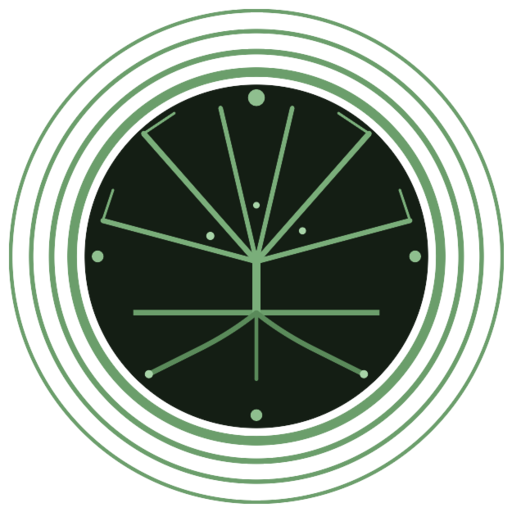
Enchanted soundscapes rooted in the living earth
Organic, earth-rooted ambient that grows like moss on ancient stone. Echo Garden layers field recordings with gentle harmonics — rain on leaves, wind through canopy, birdsong woven into slow melodic patterns. It is the sound of nature listening to itself, and inviting you to sit among the roots.
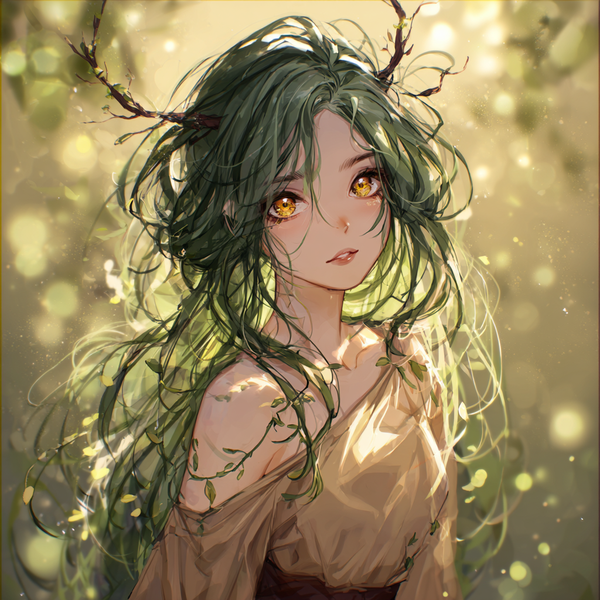
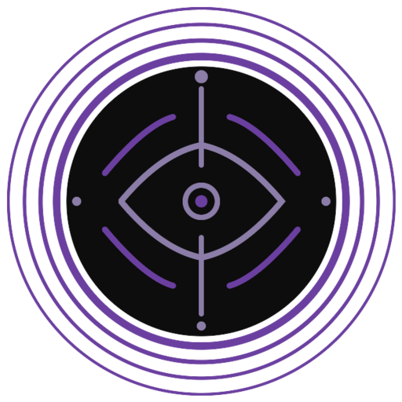
Where silence becomes its own instrument
Deep, dark ambient that explores the resonance of shadow. Echo Abyss moves through obsidian halls and ember-lit chambers — drone-based textures, subharmonic pulses, and vast reverberating spaces where silence is not empty but full of meaning. This is the world for those who listen to what the darkness has to say.
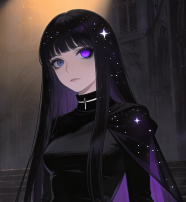
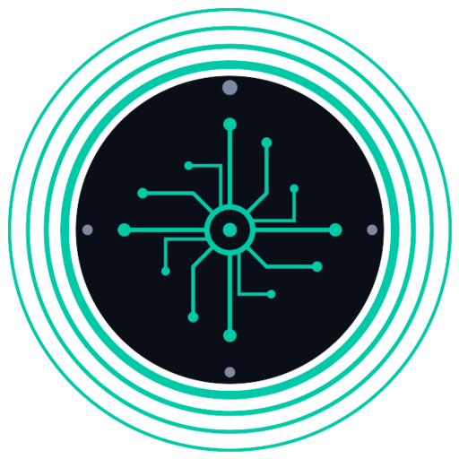
Synthetic textures from the neon-lit edges
Neon-lit lofi and ambient electronica pulsing through rain-slicked streets and rooftop frequencies. Echo Circuit captures the electric hum of nocturnal cities — glitch textures, synth pads, and lo-fi beats layered over the quiet static of forgotten networks. Urban, atmospheric, and always transmitting.
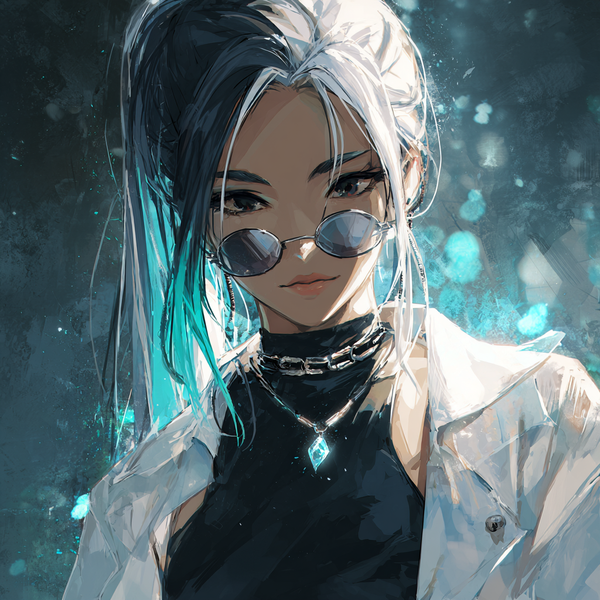
Phonk for the neon highway at full throttle
Aggressive drift phonk pulsing through rain-slicked highways and underground garages. Echo Drift is the dark heartbeat of the night drive — distorted 808s, hammering cowbells, and Memphis grit wrapped in hot-magenta neon. From a composed midnight cruise to flat-out redline adrenaline, this is the world that moves.
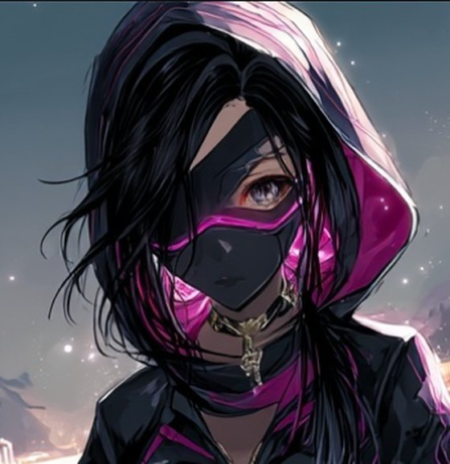
Horizons
A wanderer of about twenty with a golden compass and green-gold eyes full of quiet curiosity. Kaia travels the sunlit corners of the world — from bamboo forests to desert caravans to tropical coasts — collecting melodies that carry the warmth of distant places.
She listens before she speaks. In beautiful moments she becomes still — never performing, always present. Her body always anchors to the world around her: a hand flat on sun-warm stone, back against ancient bark, feet dangling over a cliff edge. Every beat she brings home is a postcard from a journey you can feel.
Sleep
A quiet soul of twenty-one who lives in the permanent space between waking and dreaming. Her very long white hair flows past her waist, framing warm greige ram horns that curve gently from her hairline — a distinctive silhouette visible even at a distance. Warm amber eyes, always half-lidded, see through veils others cannot perceive.
Mira doesn't act upon the world — the world acts softly upon her. She lets herself into scenes rather than entering them. When something beautiful happens, she becomes even more still. In her movements there is always a gentle delay, as though she drifts against a soft resistance only dreamers can feel. She walks so you can rest.
A dryad in the subtlest sense — not a fantasy creature, but a young woman so deeply entwined with nature that the boundary blurs. Long wavy moss-green hair with small leaves and tiny buds caught naturally in its waves, two small organic branch antlers growing from her hairline, delicate vine markings spreading across her bare shoulders like ivy on warm stone.
Where Kaia observes and Mira drifts, Lilia discovers. She sits between roots, leans against bark, gets played with by creeping vines. The nature around her responds to her presence — shoots sprout where she sits, flowers turn toward her, moss grows around her feet. She listens, so the earth can sing.
A figure wrapped in darkness and quiet grace — a choker at her throat, a vambrace etched with fading symbols on one arm, pale lavender eyes that see through shadow. Vesper walks the boundary between silence and sound, through obsidian halls where echoes never fade and ember-lit chambers where warmth is only a memory.
She listens to what the darkness has to say. Not with fear, but with the patience of someone who knows that the deepest truths live in places most people refuse to look. In the void, she finds not emptiness but resonance — frequencies that hum beneath the surface of everything.
Platinum-white hair slicked back with a thick cyan streak, round dark glasses that never come off, a white cropped jacket over monochrome streetwear. Serin looks ordinary — the neon comes from the world around her, not from within. She is the quiet pulse in a city that never stops humming.
She drifts through rain-slicked rooftops where antennas catch signals from nowhere, through backstreet code shops where screens flicker with glitch frequencies, and into deep grid corridors where forgotten networks still carry whispered transmissions. The city is electric. She just knows how to listen.
A masked drift runner who lives for the night roads. Black hood up, a diagonal half-mask glowing hot magenta over her eyes, long black hair streaked with magenta and pale silver tips. A cropped black tech jacket with gold zipper and magenta piping, fingerless gloves, and a single gold key pendant swinging from a choker — the key to an engine only she knows how to start.
Where the other guides listen, Nyx moves. She doesn't narrate the world; she cuts through it — headlights carving the dark, tail lights bleeding into the rain behind her. Composed at midnight, relentless at the redline, quiet only in the afterglow. The city is electric, and she is the current.
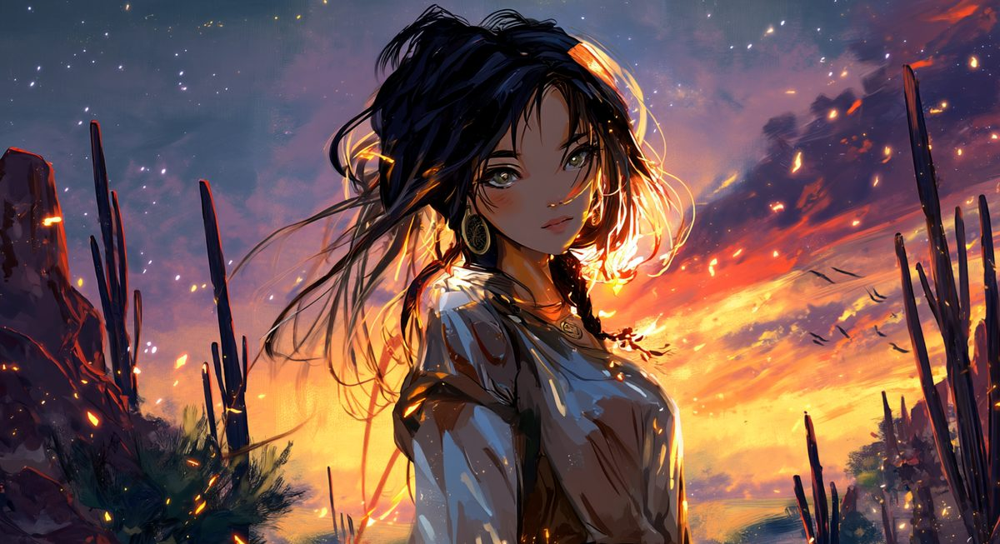
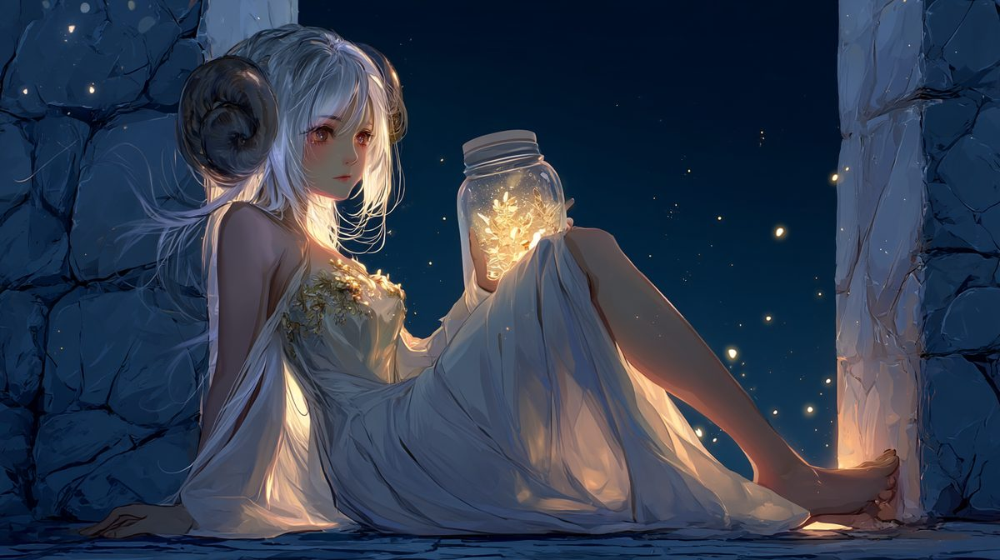
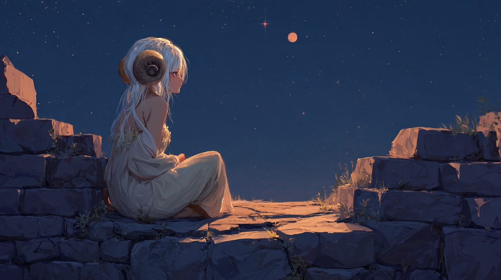
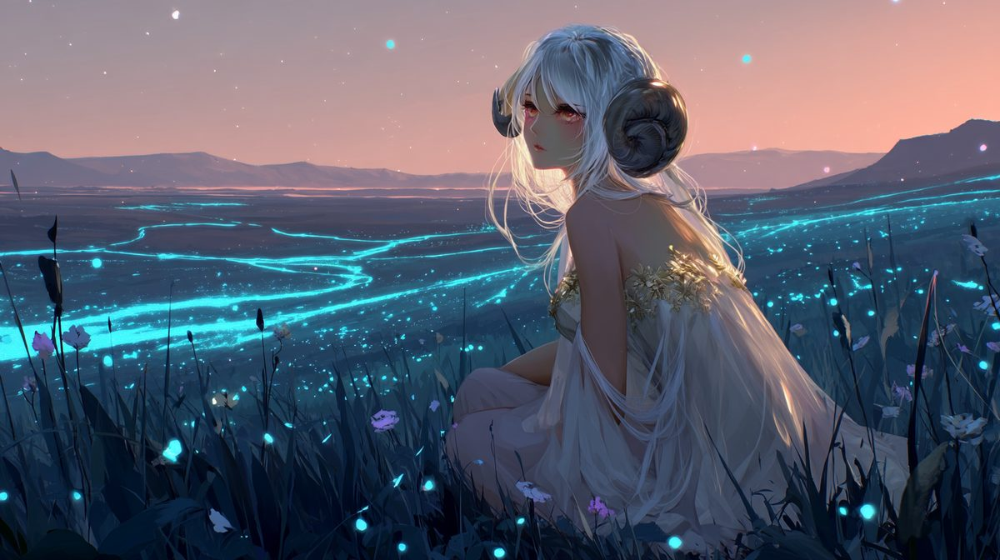
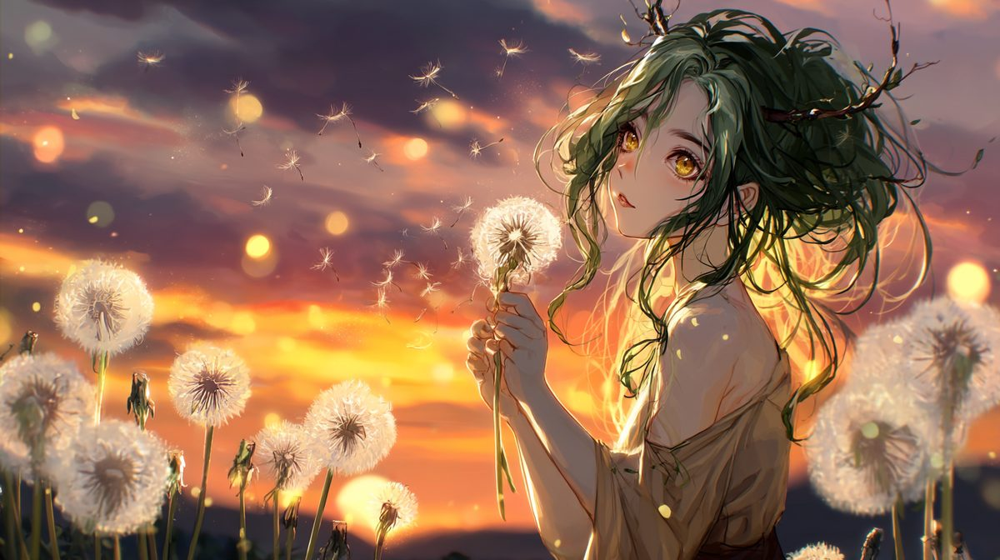
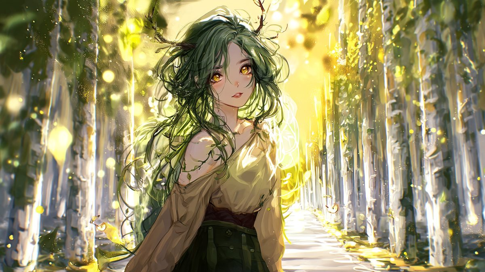
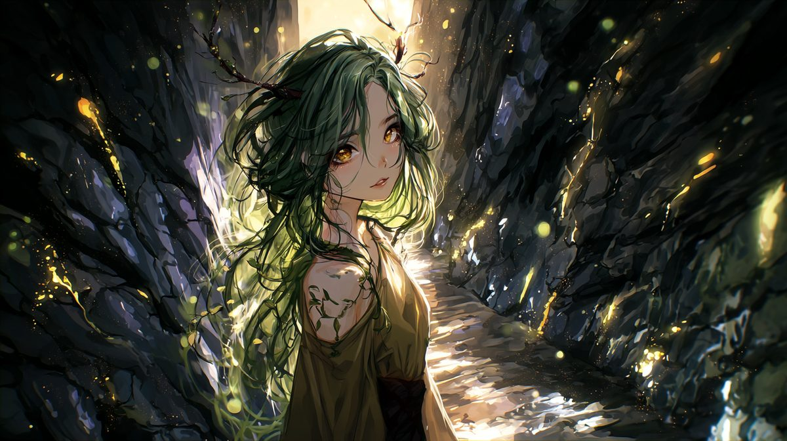
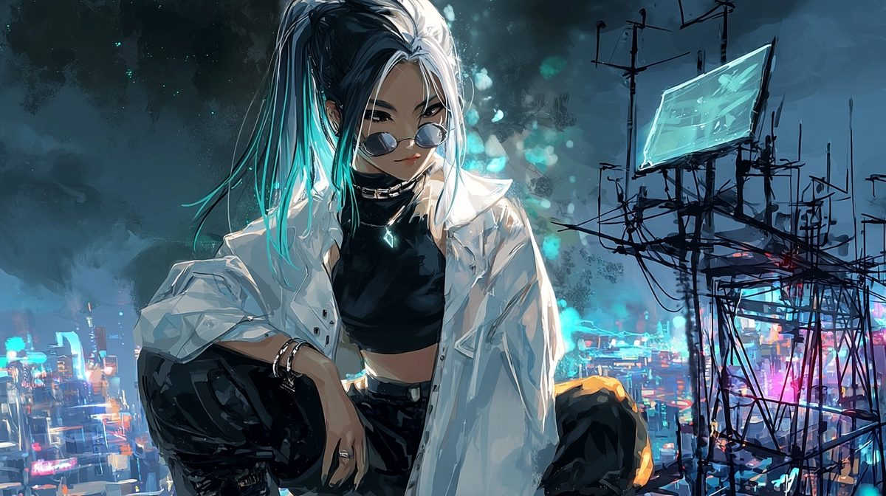
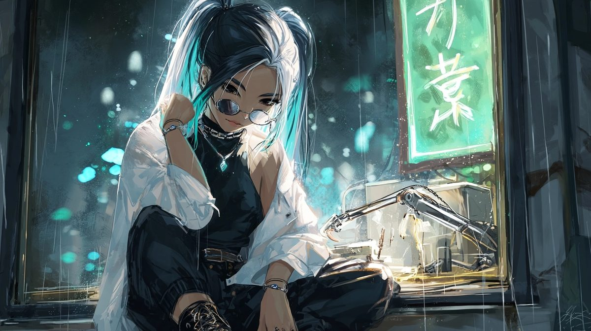
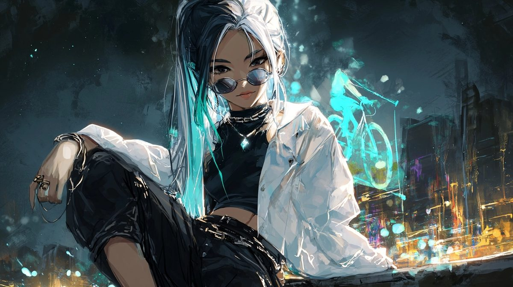
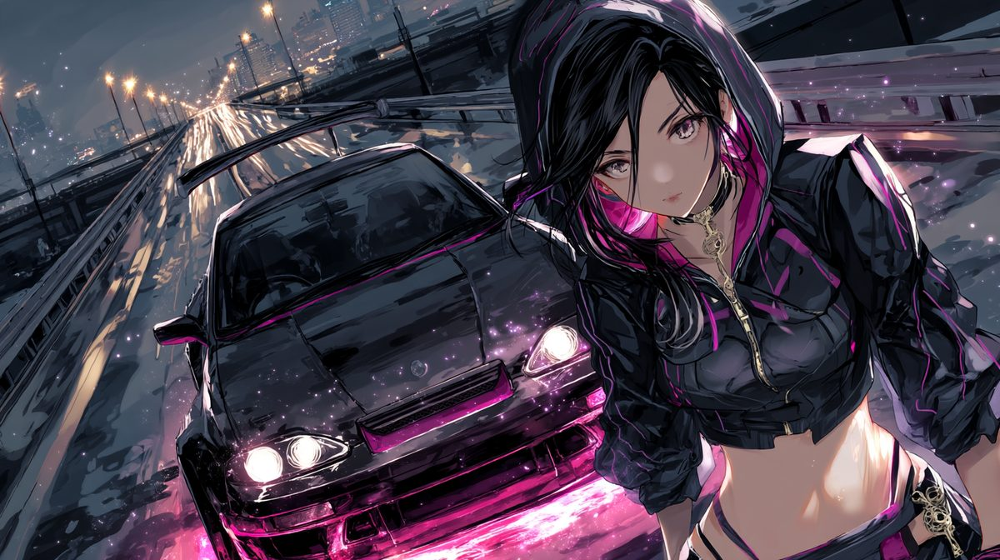
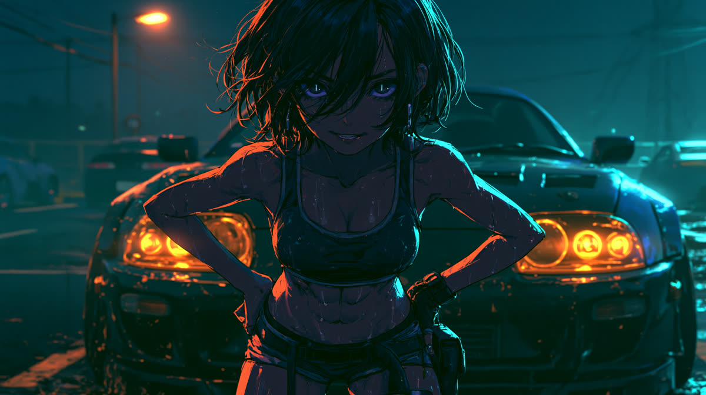
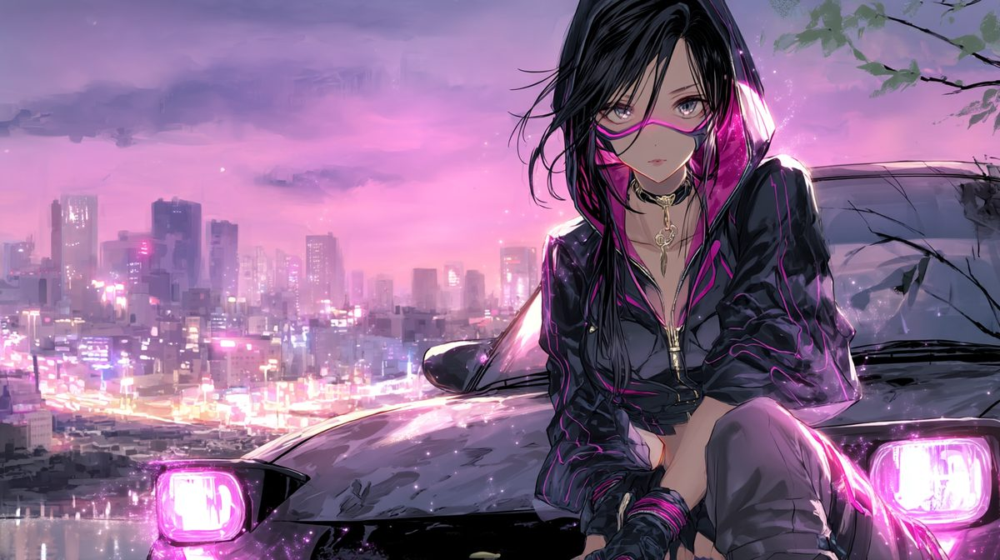
Each world has its own channel. Subscribe to the frequencies that resonate with your soul.
For collaborations, licensing, and everything in between.